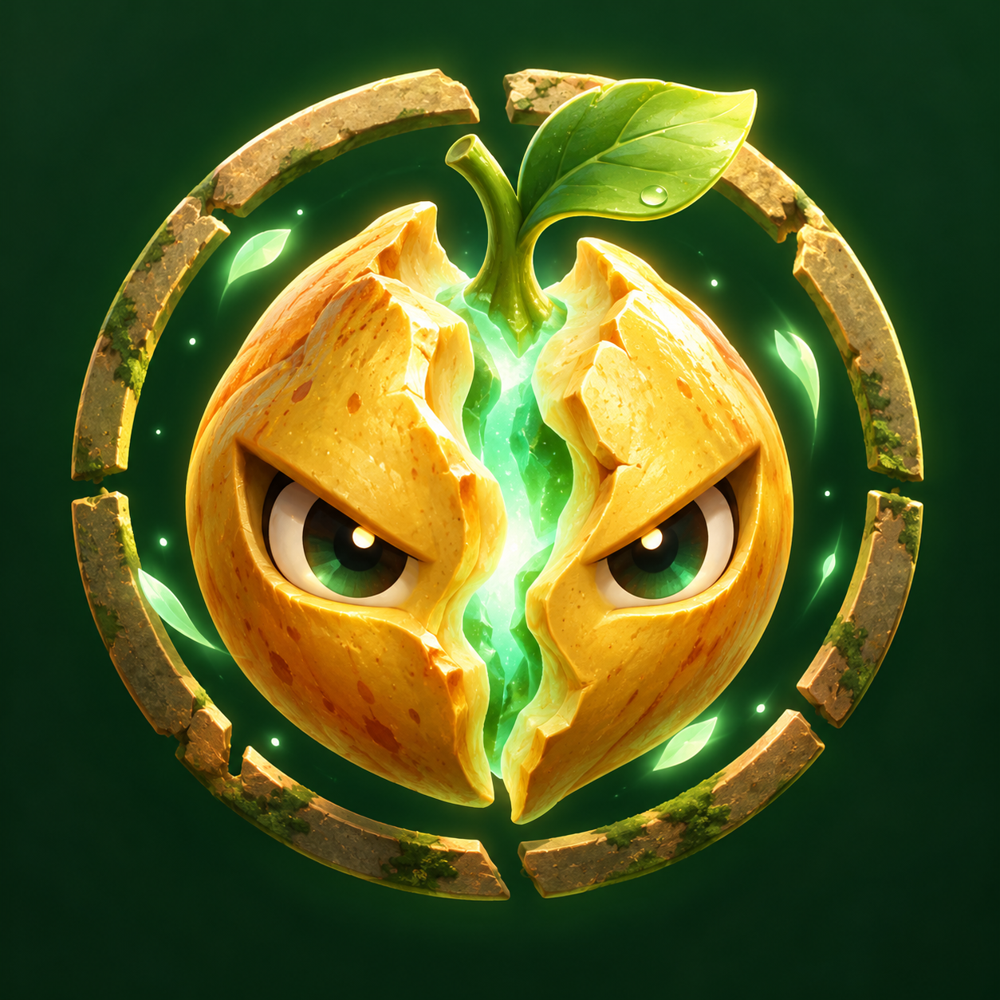

那一年，果实开始注视我们。
ROTTEN GROVE
果核禁区
踏入森林 · 寻找真相
跳过动画 →
正在唤醒森林
加载 3D 场景…
✳
果核禁区
ROTTEN GROVE · 3D EXPEDITION
单人 · 双人 · AI
▦
⚙
▣
Ⅱ
ROTTEN GROVE / 单人远征

果核
禁区
穿越三十六重异境，寻找异变的根源。
双人联网 · 创建 / 加入房间 ↗
进入训练营
→
新手教程
探索图鉴
更换探险员
操作指南
↗
01 / THE OVERGROWN MEADOW
青皮果林
树影、泥土，和一点不安分的生命。
AI 托管
H 开启 · 解放双手
✳
探险员
当前武器
Q
切换
⇄
R
装填
点击开火
自动瞄准 · 再点停止
空格
闪避
G
燃烧瓶
E
▲
◀
移动
▶
▼
C 互动 · M 大地图 · H AI 托管 · WASD / 左侧方向键移动 · 点击枪械开火 · 点击出口前往 · B 背包 · 1–5 切换 · T 开宝箱 · 右键点击地面行走 · Esc 暂停
异变领主
FIELD SETTINGS
调整旅途的节奏
音效音量
实时阴影
轻微镜头震动
辅助瞄准
设置保存在当前浏览器。打开设置时单人游戏会暂停。
保存并返回
3D 场景未能启动
重新加载